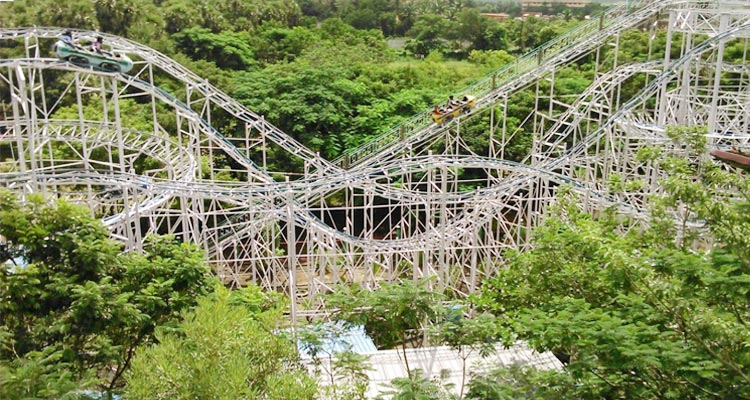
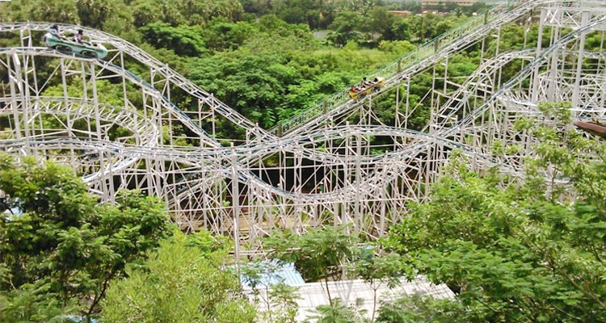

1. Queensland

 

The park may be named Queensland but it can be aptly described as the king of all amusement parks in Chennai. Offering an amazing combination of rides, the park promises a scintillating experience for everyone who steps into this fun kingdom. The biggest draw of Queensland Chennai is the Free Fall Tower ride. Designed for the adventure daredevils, this thrilling ride will make your adrenaline rush up as you drop from high up in the sky. Another major attraction of the park is the Super Waves that lets you frolic about in the water as huge waves hit you. From Roller Coasters, Centrox, and Hanging Coaster to Go Karting, Bumper Cars, Space Journey, the list of thrilling rides here is indeed long and varied!
Queensland also has a good number of dedicated rides to keep the little adventurers happy for hours on end. A huge lake within the park’s perimeter enables you to enjoy boat rides. The best part is that you don’t have to pay anything for the rides once you enter the park; your entry ticket covers it all. In other words, you step into a zone of unlimited fun and adventure.
- Location: Chennai-Bengaluru Highway, Palanjur, Sembarambakkam, Chennai
- Timing:
Weekdays- 10.00am to 06.30pm
Weekend- 10.00am-07.30pm
Closed on Monady
- Entry fee:
Adults – ₹ 550 per head
Children – ₹ 450 per head
Free entry for children below 2 feet (0.61 m) height